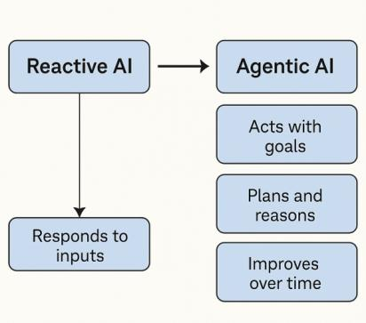

Courtesy of www.ssonetwork.com/
Agentic AI, referring to AI systems that act autonomously with goal-directed behavior, often in multi-step environments, is shaping up to be the next potential killer topic in high technology.
Most AI today responds to inputs. But what happens when AI starts to act, plan, and self-direct? Agentic AI is a new paradigm where systems operate with autonomy and goals—reasoning about what to do next, coordinating with humans or machines, and improving over time. Think AI developers, self- motivated digital assistants, or research agents that explore on your behalf. It’s a shift from tools to teammates—and it’s reshaping the future of work, software, and intelligence.
Agentic AI describes AI systems that are designed to autonomously make decisions and act, with the ability to pursue complex goals with limited supervision. It brings together the flexible characteristics of large language models (LLMs) with the accuracy of traditional programming. This type of AI acts autonomously to achieve a goal by using technologies like natural language processing (NLPs), machine learning, reinforcement learning and knowledge representation. It’s a proactive AI-powered approach, whereas gen AI is reactive to the users input. Agentic AI can adapt to different or changing situations and has “agency” to make decisions based on context. It is used in various applications that can benefit from independent operation, such as robotics, complex analysis, and virtual assistants [1].
500+ Agentic AI Projects/UseCases
[1] Teaganne Finn, Amanda Downie, "Agentic AI vs. generative AI", The 2025 Guide to AI Agents, IBM.